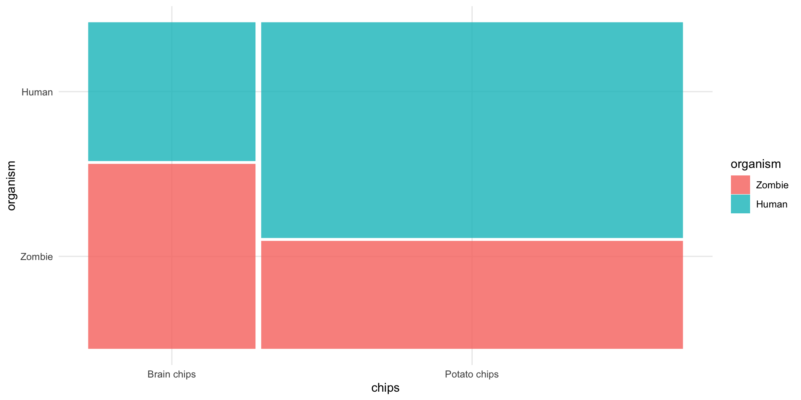

| Organism | Brain chips | Potato chips | Total |
|---|---|---|---|
| Human | 50 | ||
| Zombie | 50 | ||
| Total | 100 |
The Chi Square test
University of Sussex


|
Load and Look

Load and Look
| organism | Brain chips | Potato chips | Total |
|---|---|---|---|
| Zombie | 36 | 53 | 89 |
| Human | 27 | 106 | 133 |
| Total | 63 | 159 | 222 |
Visualize


Interpret
| Chi2(1) | p |
|---|---|
| 9.68 | 0.002 |

Interpret
Interpret
| Odds ratio | 95% CI |
|---|---|
| 2.67 | [1.47, 4.85] |
Evaluate assumptions